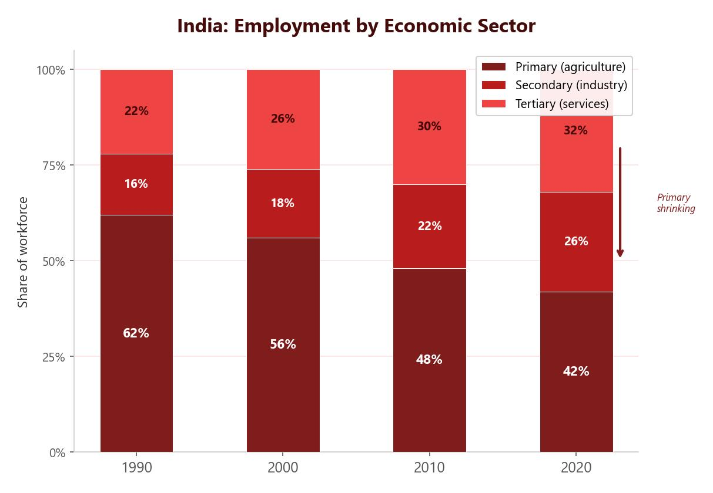

India’s Changing Employment Structure
India’s economy has shifted significantly over the past few decades. Like most NEEs, India has moved from an economy dominated by agriculture (primary sector) towards one with growing manufacturing (secondary) and services (tertiary) sectors. This pattern of change is explained by the Clark Fisher model.
The Four Employment Sectors
- Primary sector — extraction of raw materials and natural resources. Examples: farming, fishing, mining.
- Secondary sector — taking raw materials and manufacturing products from them. Examples: car manufacturing, food processing, textiles.
- Tertiary sector — providing services to other people. Examples: teaching, healthcare, retail, transport.
- Quaternary sector — knowledge-based work involving research and development of new technology. Examples: scientific research, IT, software development.
In 2021, India’s employment structure was approximately: primary 44%, secondary 25% and tertiary 31%. Compare this to the UK, where tertiary jobs account for around 81% of employment. India’s primary sector has been shrinking while its secondary and tertiary sectors are growing — a clear sign of economic development.

Why Is India’s Secondary Sector Growing?
Between 2018 and 2019, India’s GDP increased by 257%. This rapid growth shifted the economy from an agricultural base towards more manufacturing. India is home to major manufacturing industries including Tata Motors, Ford, Boeing, Hyundai and Volvo. These are transnational corporations (TNCs) attracted to India because of its large, low-cost workforce, central global location and government policies that encourage foreign investment.
When a new TNC sets up in India, it triggers the multiplier effect. The factory creates jobs, workers spend their wages locally, new shops and services open to meet demand, and the government collects more tax to invest in infrastructure. This cycle of growth spreads benefits across the wider economy.
Case Study: Hyundai in India
Hyundai is a South Korean car manufacturer and one of the world’s most recognisable TNCs. Its headquarters are in Seoul, South Korea, but it operates 12 manufacturing factories in 10 countries. In May 1996, Hyundai opened its first factory in India to compete with existing brands in the Indian market.
Hyundai quickly gained popularity among Indian consumers. Since 2008, it has been voted “Indian Car of the Year” seven times. In 2023, India produced 25.34 million vehicles in total — car manufacturing accounts for 7.1% of India’s GDP and 35% of its manufacturing GDP, worth over $222 billion (higher than the entire GDP of Greece).
Why Did Hyundai Choose India?
- India has a huge population of 1.4 billion, providing a large workforce willing to accept lower wages.
- India is the second-largest English-speaking country in the world, making communication easier for international companies.
- India has specialised factories already set up for car manufacturing, reducing start-up costs.
- India’s central global location makes trade routes between Europe and Asia easier.
- The Indian government offers policies that encourage TNCs to invest.
Advantages of Hyundai in India
- Hyundai employs over 50,000 people in India, providing stable incomes for families. These wages are taxed, generating revenue for government services like schools and hospitals.
- Hyundai has planned to invest $2.45 billion into electric vehicles in India over the next decade, showing long-term commitment to the country.
- Lower assembly line costs allow cheaper production, increasing profits and competitiveness.
- Hyundai can directly target its Indian audience and tailor products to local needs, maximising sales.
Disadvantages of Hyundai in India
- Low wages — the average wage for car manufacturing workers in India is roughly £2,500 per year. Some workers earn as little as £2 per day, meaning they struggle to afford basic living costs.
- Higher-skilled jobs go to foreigners — of Hyundai’s 2,864 head office employees, 138 are from other countries, filling roles in marketing and accountancy. Local workers have limited chances of promotion.
- Economic leakage — profits made in India are often sent back to Hyundai’s headquarters in South Korea rather than being reinvested locally. This means less money goes into improving local facilities and services, and the Indian government receives less tax revenue.
India and the UK have very different employment structures because they are at different stages of development. India (an NEE) has 44% primary, 25% secondary and 31% tertiary employment. The UK (an HIC) has just 1% primary, 18% secondary and 81% tertiary. As India continues to develop, its employment structure is expected to shift further towards tertiary and quaternary sectors, with primary employment declining — following the same path the UK took over the past 150 years.
India’s Trade
India’s exports are worth approximately $115 billion, while its imports cost $228 billion. This means India has a negative balance of trade — it spends $113 billion more on imports than it earns from exports.
Imports
India’s biggest imports include oil, precious and semi-precious stones, and electrical machinery and equipment. The highest value of imports come from China ($94 billion), the UAE ($42 billion) and the USA ($39 billion). The fact that India imports large quantities of oil and machinery suggests its manufacturing sector is growing rapidly, especially in the secondary sector.
Exports
India’s biggest exports include petroleum products, jewellery, pharmaceutical products and rice. The highest value of exports go to the USA ($72 billion), UAE ($25 billion), China ($23 billion) and Bangladesh ($14 billion). The UK is the seventh-largest importer of Indian products. It is beneficial for India to import cheaper raw materials and export more expensive finished products, as this adds greater value.
Trade Agreements
India is part of 13 trade agreements. The largest is the GSTP (Global System of Trade Preferences), which includes over 42 countries worldwide, from Pakistan and Vietnam to Brazil and Mexico. A more localised example is SAFTA (South Asian Free Trade Agreement), covering seven South Asian countries including Pakistan, Nepal and Sri Lanka. These agreements help India access wider markets and maintain positive relationships with trading partners.
India has invested heavily in its military since 1992, spending approximately $73 billion per year by 2023 (up from $8 billion in 1992). Much of this money comes from trade revenue, reflecting India’s growing economic power and its need to maintain security alongside neighbours China and Pakistan.